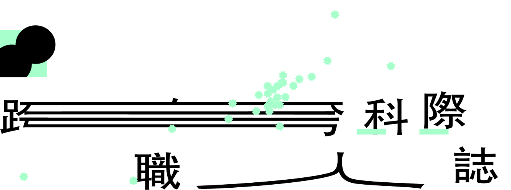
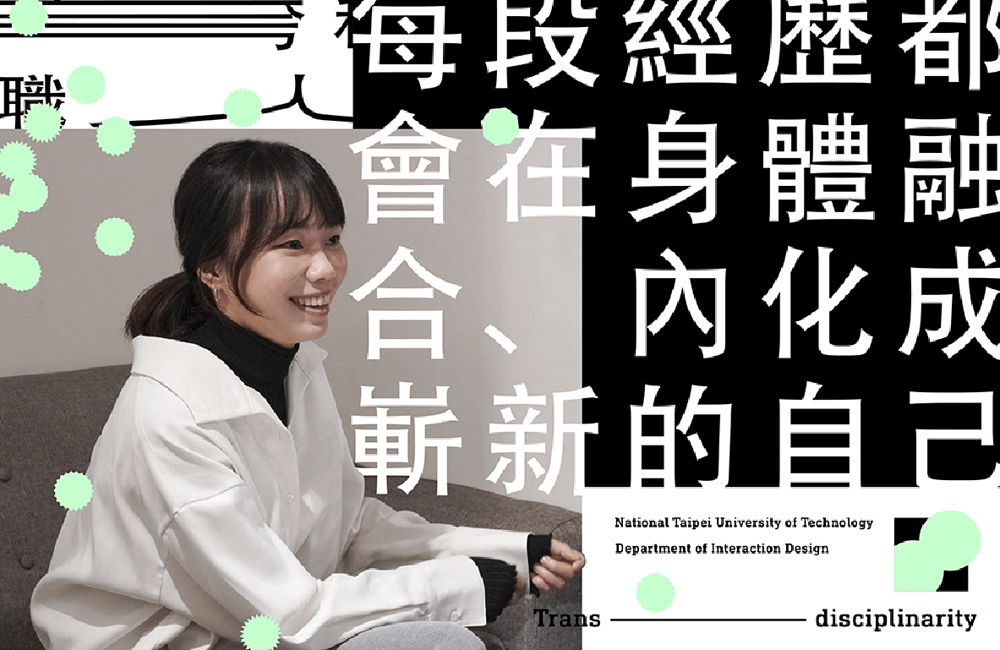
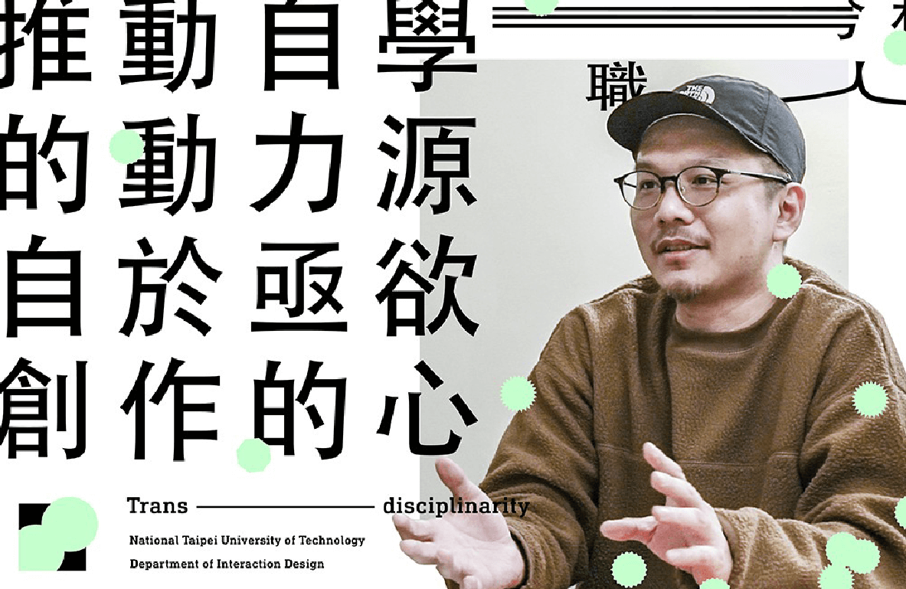
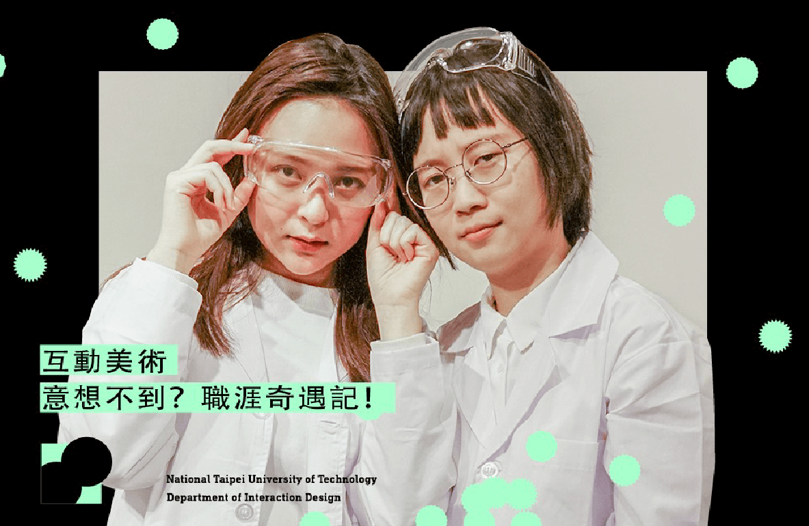
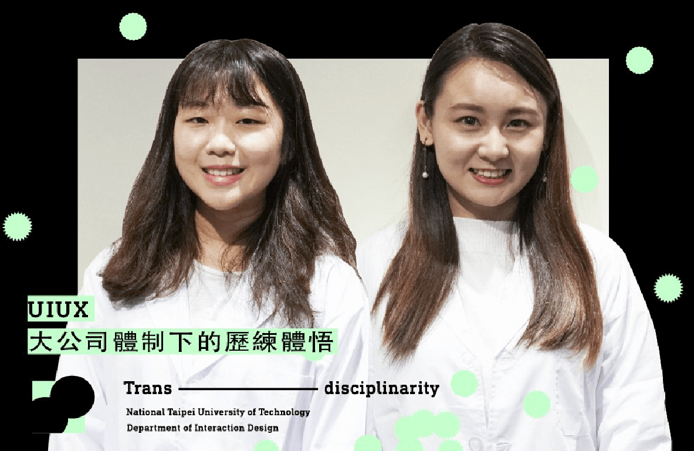
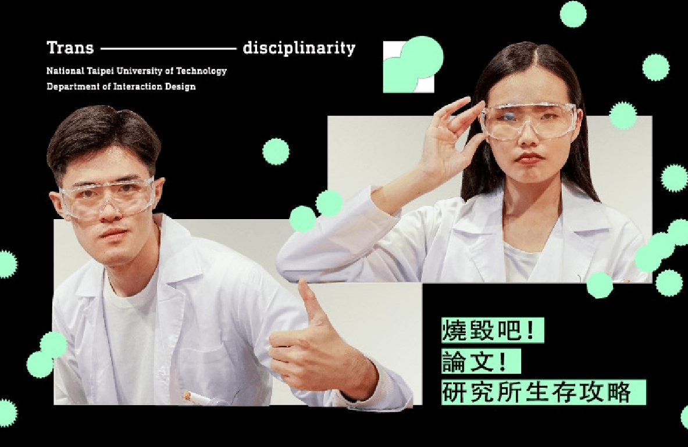

01
透過訪談具備跨領域背景的不同職人，藉由其豐富的人物歷程，探討跨科際對於自主學習與不同背景發展下的重要性，同時也讓人看見互動設計的多元面貌與特質，產生更深入的認識與好奇。

柔韌動態背後的歷練轉化
空集設計Nulls Design共同創辦人．徐光慧
別讓畢製成為你最後的創作，
創作身兼經營者的自我修煉之路
dosomething studio 創辦人．王宗欣

MORE
02
先派，取自於日文『前輩』之諧音，賦予『先被派出之人』含義。
依據畢業後的不同經歷，將先派們分為UIUX組、美術動畫組與研究生三組。透過進行量身打造的趣味小實驗，與學長姐暢聊派出去後的秘辛分享，頗析互動系畢業後的生態情況。

意想不到？職涯奇遇記！
叁式 ULTRA COMBOS．江家伶、顏晧真
小職員の大企業求生指南
仁寶科技．林秀育、台達電子．林佳燕


燒毀吧！論文！
研究所生存攻略
北科互動所．張宇彤、交大傳播所．古偉助
©2019 NTUT. ALL RIGHTS RESERVED
NATIONAL TAIPEI UNIVERSITY OF TECHNOLOGY DEPARTMENT OF INTERACTION DESIGN NATIONAL TAIPEI UNIVERSITY OF TECHNOLOGY DEPARTMENT OF INTERACTION DESIGN NATIONAL TAIPEI UNIVERSITY OF TECHNOLOGY DEPARTMENT OF INTERACTION DESIGN NATIONAL TAIPEI UNIVERSITY OF TECHNOLOGY DEPARTMENT OF INTERACTION DESIGN NATIONAL TAIPEI UNIVERSITY OF TECHNOLOGY DEPARTMENT OF INTERACTION DESIGN NATIONAL TAIPEI UNIVERSITY OF TECHNOLOGY DEPARTMENT OF INTERACTION DESIGN NATIONAL TAIPEI UNIVERSITY OF TECHNOLOGY DEPARTMENT OF INTERACTION DESIGN NATIONAL TAIPEI UNIVERSITY OF TECHNOLOGY DEPARTMENT OF INTERACTION DESIGN NATIONAL TAIPEI UNIVERSITY OF TECHNOLOGY DEPARTMENT OF INTERACTION DESIGN NATIONAL TAIPEI UNIVERSITY OF TECHNOLOGY DEPARTMENT OF INTERACTION DESIGN NATIONAL TAIPEI UNIVERSITY OF TECHNOLOGY DEPARTMENT OF INTERACTION DESIGN NATIONAL TAIPEI UNIVERSITY OF TECHNOLOGY DEPARTMENT OF INTERACTION DESIGN NATIONAL TAIPEI UNIVERSITY OF TECHNOLOGY DEPARTMENT OF INTERACTION DESIGN NATIONAL TAIPEI UNIVERSITY OF TECHNOLOGY DEPARTMENT OF INTERACTION DESIGN NATIONAL TAIPEI UNIVERSITY OF TECHNOLOGY DEPARTMENT OF INTERACTION DESIGN NATIONAL TAIPEI UNIVERSITY OF TECHNOLOGY DEPARTMENT OF INTERACTION DESIGN
國立臺北科技大學 互動設計系畢業展 06/07-10 @臺北松山文創園區 四號倉庫 國立臺北科技大學 互動設計系畢業展 06/07-10 @臺北松山文創園區 四號倉庫 國立臺北科技大學 互動設計系畢業展 06/07-10 @臺北松山文創園區 四號倉庫 國立臺北科技大學 互動設計系畢業展 06/07-10 @臺北松山文創園區 四號倉庫 國立臺北科技大學 互動設計系畢業展 06/07-10 @臺北松山文創園區 四號倉庫 國立臺北科技大學 互動設計系畢業展 06/07-10 @臺北松山文創園區 四號倉庫 國立臺北科技大學 互動設計系畢業展 06/07-10 @臺北松山文創園區 四號倉庫 國立臺北科技大學 互動設計系畢業展 06/07-10 @臺北松山文創園區 四號倉庫 國立臺北科技大學 互動設計系畢業展 06/07-10 @臺北松山文創園區 四號倉庫 國立臺北科技大學 互動設計系畢業展 06/07-10 @臺北松山文創園區 四號倉庫 國立臺北科技大學 互動設計系畢業展 06/07-10 @臺北松山文創園區 四號倉庫 國立臺北科技大學 互動設計系畢業展 06/07-10 @臺北松山文創園區 四號倉庫 國立臺北科技大學 互動設計系畢業展 06/07-10 @臺北松山文創園區 四號倉庫 國立臺北科技大學 互動設計系畢業展 06/07-10 @臺北松山文創園區 四號倉庫 國立臺北科技大學 互動設計系畢業展 06/07-10 @臺北松山文創園區 四號倉庫 國立臺北科技大學 互動設計系畢業展 06/07-10 @臺北松山文創園區 四號倉庫 國立臺北科技大學 互動設計系畢業展 06/07-10 @臺北松山文創園區 四號倉庫 國立臺北科技大學 互動設計系畢業展 06/07-10 @臺北松山文創園區 四號倉庫 國立臺北科技大學 互動設計系畢業展 06/07-10 @臺北松山文創園區 四號倉庫 國立臺北科技大學 互動設計系畢業展 06/07-10 @臺北松山文創園區 四號倉庫 國立臺北科技大學 互動設計系畢業展 06/07-10 @臺北松山文創園區 四號倉庫 國立臺北科技大學 互動設計系畢業展 06/07-10 @臺北松山文創園區 四號倉庫 國立臺北科技大學 互動設計系畢業展 06/07-10 @臺北松山文創園區 四號倉庫 國立臺北科技大學 互動設計系畢業展 06/07-10 @臺北松山文創園區 四號倉庫 國立臺北科技大學 互動設計系畢業展 06/07-10 @臺北松山文創園區 四號倉庫 國立臺北科技大學 互動設計系畢業展 06/07-10 @臺北松山文創園區 四號倉庫 國立臺北科技大學 互動設計系畢業展 06/07-10 @臺北松山文創園區 四號倉庫 國立臺北科技大學 互動設計系畢業展 06/07-10 @臺北松山文創園區 四號倉庫 國立臺北科技大學 互動設計系畢業展 06/07-10 @臺北松山文創園區 四號倉庫 國立臺北科技大學 互動設計系畢業展 06/07-10 @臺北松山文創園區 四號倉庫 國立臺北科技大學 互動設計系畢業展 06/07-10 @臺北松山文創園區 四號倉庫 國立臺北科技大學 互動設計系畢業展 06/07-10 @臺北松山文創園區 四號倉庫
NATIONAL TAIPEI UNIVERSITY OF TECHNOLOGY DEPARTMENT OF INTERACTION DESIGN NATIONAL TAIPEI UNIVERSITY OF TECHNOLOGY DEPARTMENT OF INTERACTION DESIGN NATIONAL TAIPEI UNIVERSITY OF TECHNOLOGY DEPARTMENT OF INTERACTION DESIGN NATIONAL TAIPEI UNIVERSITY OF TECHNOLOGY DEPARTMENT OF INTERACTION DESIGN NATIONAL TAIPEI UNIVERSITY OF TECHNOLOGY DEPARTMENT OF INTERACTION DESIGN NATIONAL TAIPEI UNIVERSITY OF TECHNOLOGY DEPARTMENT OF INTERACTION DESIGN NATIONAL TAIPEI UNIVERSITY OF TECHNOLOGY DEPARTMENT OF INTERACTION DESIGN NATIONAL TAIPEI UNIVERSITY OF TECHNOLOGY DEPARTMENT OF INTERACTION DESIGN NATIONAL TAIPEI UNIVERSITY OF TECHNOLOGY DEPARTMENT OF INTERACTION DESIGN NATIONAL TAIPEI UNIVERSITY OF TECHNOLOGY DEPARTMENT OF INTERACTION DESIGN NATIONAL TAIPEI UNIVERSITY OF TECHNOLOGY DEPARTMENT OF INTERACTION DESIGN NATIONAL TAIPEI UNIVERSITY OF TECHNOLOGY DEPARTMENT OF INTERACTION DESIGN NATIONAL TAIPEI UNIVERSITY OF TECHNOLOGY DEPARTMENT OF INTERACTION DESIGN NATIONAL TAIPEI UNIVERSITY OF TECHNOLOGY DEPARTMENT OF INTERACTION DESIGN NATIONAL TAIPEI UNIVERSITY OF TECHNOLOGY DEPARTMENT OF INTERACTION DESIGN NATIONAL TAIPEI UNIVERSITY OF TECHNOLOGY DEPARTMENT OF INTERACTION DESIGN
國立臺北科技大學 互動設計系畢業展 06/07-10 @臺北松山文創園區 四號倉庫 國立臺北科技大學 互動設計系畢業展 06/07-10 @臺北松山文創園區 四號倉庫 國立臺北科技大學 互動設計系畢業展 06/07-10 @臺北松山文創園區 四號倉庫 國立臺北科技大學 互動設計系畢業展 06/07-10 @臺北松山文創園區 四號倉庫 國立臺北科技大學 互動設計系畢業展 06/07-10 @臺北松山文創園區 四號倉庫 國立臺北科技大學 互動設計系畢業展 06/07-10 @臺北松山文創園區 四號倉庫 國立臺北科技大學 互動設計系畢業展 06/07-10 @臺北松山文創園區 四號倉庫 國立臺北科技大學 互動設計系畢業展 06/07-10 @臺北松山文創園區 四號倉庫 國立臺北科技大學 互動設計系畢業展 06/07-10 @臺北松山文創園區 四號倉庫 國立臺北科技大學 互動設計系畢業展 06/07-10 @臺北松山文創園區 四號倉庫 國立臺北科技大學 互動設計系畢業展 06/07-10 @臺北松山文創園區 四號倉庫 國立臺北科技大學 互動設計系畢業展 06/07-10 @臺北松山文創園區 四號倉庫 國立臺北科技大學 互動設計系畢業展 06/07-10 @臺北松山文創園區 四號倉庫 國立臺北科技大學 互動設計系畢業展 06/07-10 @臺北松山文創園區 四號倉庫 國立臺北科技大學 互動設計系畢業展 06/07-10 @臺北松山文創園區 四號倉庫 國立臺北科技大學 互動設計系畢業展 06/07-10 @臺北松山文創園區 四號倉庫 國立臺北科技大學 互動設計系畢業展 06/07-10 @臺北松山文創園區 四號倉庫 國立臺北科技大學 互動設計系畢業展 06/07-10 @臺北松山文創園區 四號倉庫 國立臺北科技大學 互動設計系畢業展 06/07-10 @臺北松山文創園區 四號倉庫 國立臺北科技大學 互動設計系畢業展 06/07-10 @臺北松山文創園區 四號倉庫 國立臺北科技大學 互動設計系畢業展 06/07-10 @臺北松山文創園區 四號倉庫 國立臺北科技大學 互動設計系畢業展 06/07-10 @臺北松山文創園區 四號倉庫 國立臺北科技大學 互動設計系畢業展 06/07-10 @臺北松山文創園區 四號倉庫 國立臺北科技大學 互動設計系畢業展 06/07-10 @臺北松山文創園區 四號倉庫 國立臺北科技大學 互動設計系畢業展 06/07-10 @臺北松山文創園區 四號倉庫 國立臺北科技大學 互動設計系畢業展 06/07-10 @臺北松山文創園區 四號倉庫 國立臺北科技大學 互動設計系畢業展 06/07-10 @臺北松山文創園區 四號倉庫 國立臺北科技大學 互動設計系畢業展 06/07-10 @臺北松山文創園區 四號倉庫 國立臺北科技大學 互動設計系畢業展 06/07-10 @臺北松山文創園區 四號倉庫 國立臺北科技大學 互動設計系畢業展 06/07-10 @臺北松山文創園區 四號倉庫 國立臺北科技大學 互動設計系畢業展 06/07-10 @臺北松山文創園區 四號倉庫 國立臺北科技大學 互動設計系畢業展 06/07-10 @臺北松山文創園區 四號倉庫